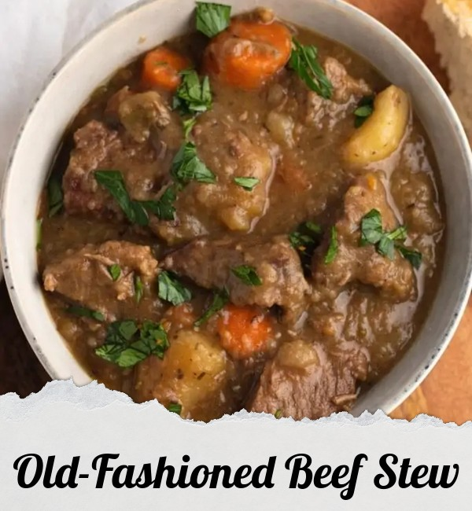

INGREDIENTS:
- 2 pounds cubed beef stew meat
- 3 tablespoons vegetable oil
- 4 cubes beef bouillon, crumbled
- 4 cups of water
- 1 teaspoon dried rosemary
- 1 teaspoon dried parsley
- 1/2 teaspoon ground black pepper
- 3 large potatoes, peeled and cubed
- 4 carrots, cut into 1-inch pieces
- 4 stalks celery, cut into 1-inch pieces
- 1 large onion, chopped
- 2 teaspoons cornstarch
- 2 teaspoons cold water
DIRECTIONS:
- Add the oil to a Dutch Oven, or a large, heavy-bottom pot.
- Cook the beef in batches over medium heat until brown. Ensure to cook on all sides and move to a plate while cooking the rest. Be careful not to overcrowd the pot.
- When the beef is all browned, dissolve the beef bouillon in hot water and then add to the pot.
- Carefully place the beef back into the pot, with the liquid and seasonings.
- Bring everything to a boil before reducing the heat to a low simmer and covering with the lid.
- Leave the beef to simmer for an hour, checking occasionally and stirring to prevent anything from sticking.
- While the beef cooks, wash, peel, and cut your vegetables. Be careful not to cut them too small, so that they keep their form after cooking.
- In a small bowl, make a u201cslurryu201d using the cornstarch and 2 teaspoons of water. Mix it thoroughly until totally smooth.
- After an hour, add in the vegetables and slurry, stirring everything through.
- Cover the pot and let simmer for another hour, stirring occasionally.
- Serve in a big bowl with crusty French bread.